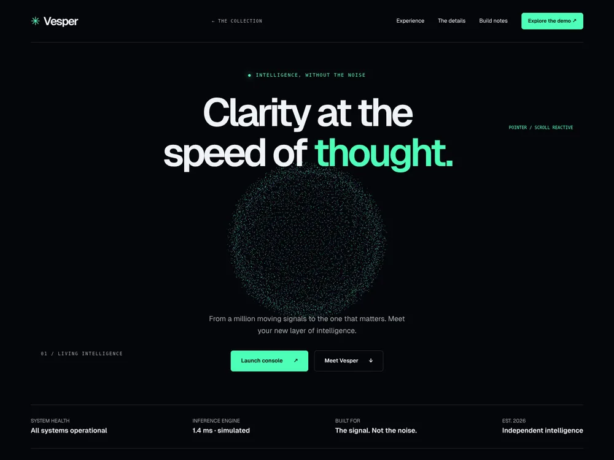
A living instrument for a world in motion.
Thirteen briefs. Thirteen different worlds.
A collection of interactive websites exploring what happens when a design prompt becomes something you can actually experience.

A living instrument for a world in motion.
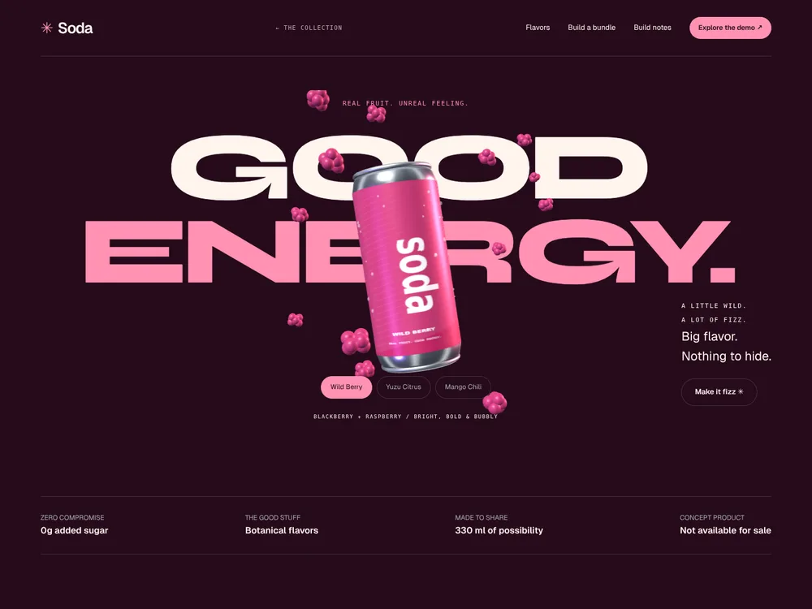
A little wild. A lot of fizz.
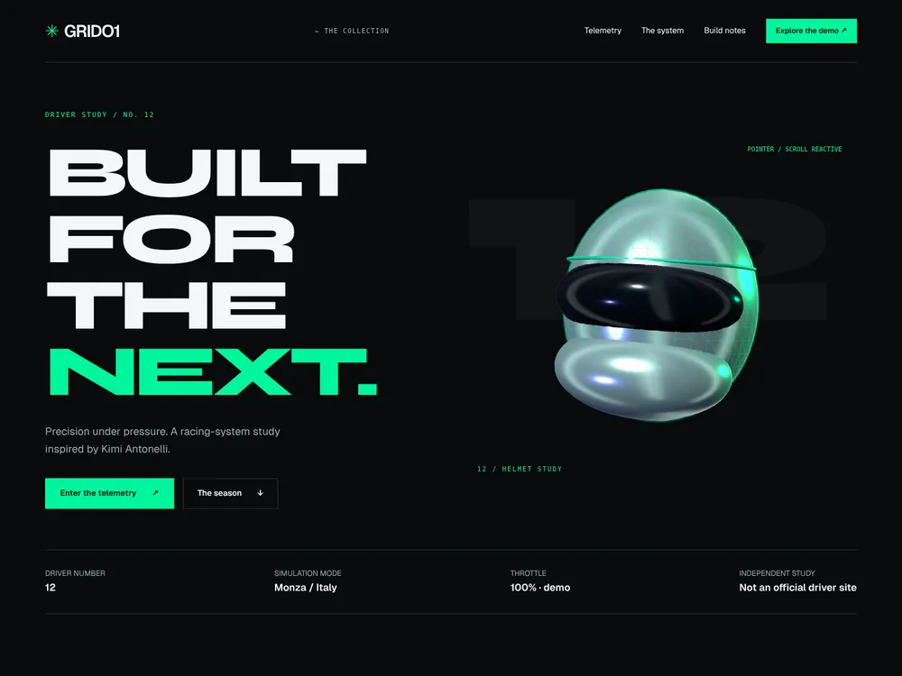
Every thousandth tells a story.
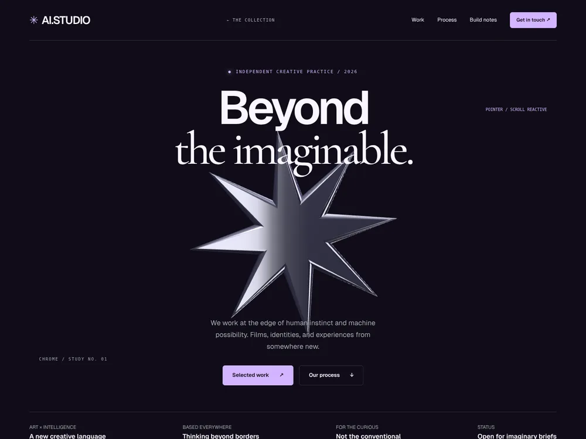
Human imagination. New dimensions.
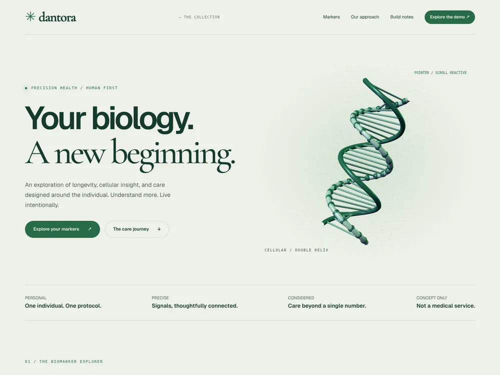
A deeper understanding of you.
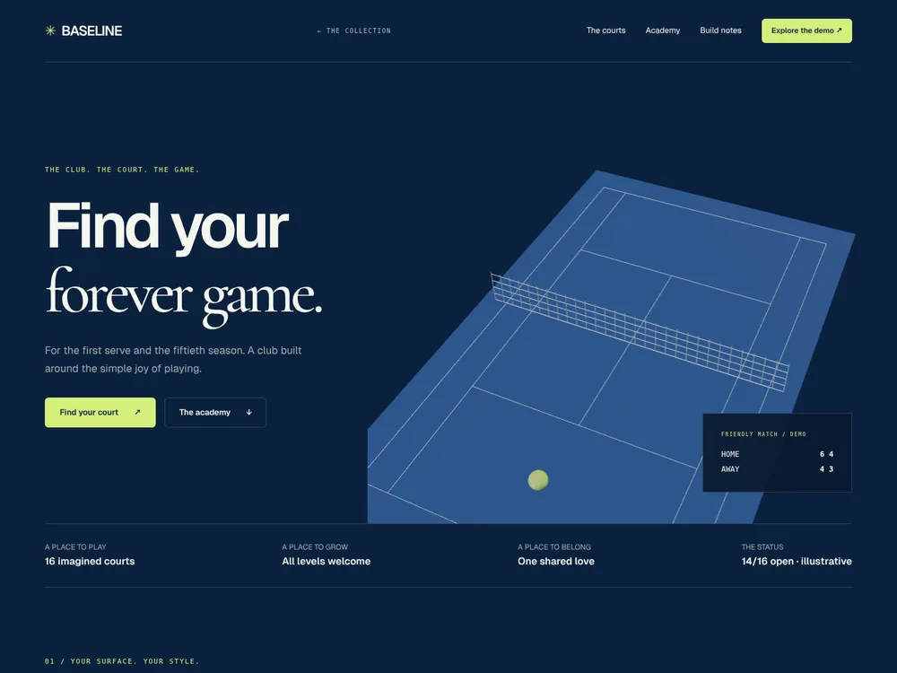
A lifelong love of the game.
Money should move like you do.
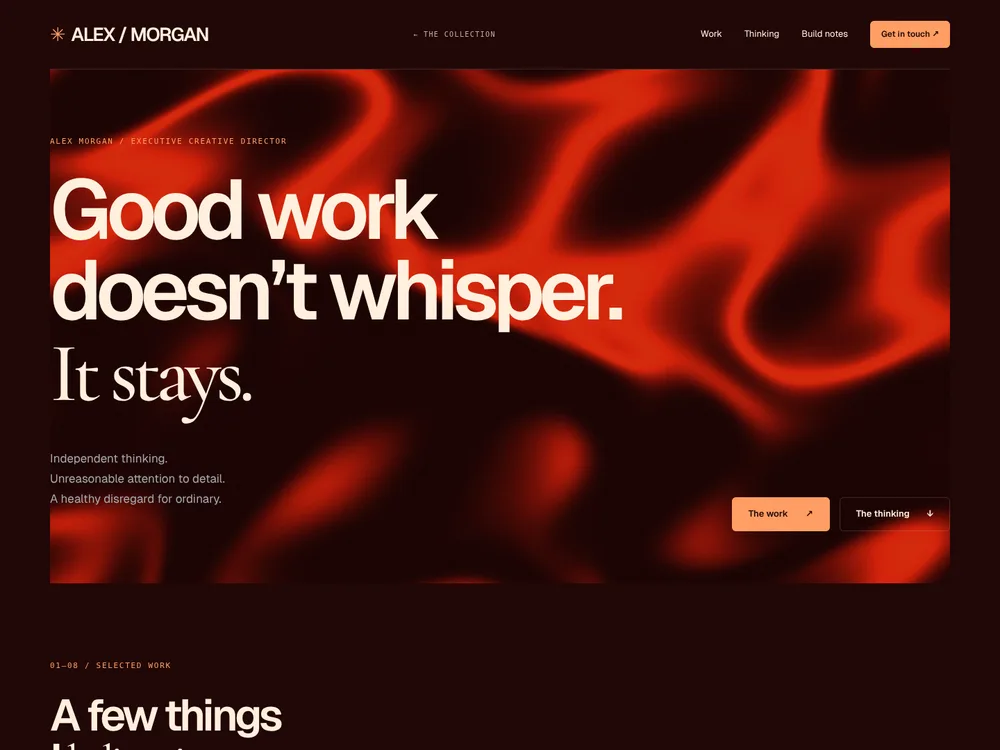
Work that makes you feel something.
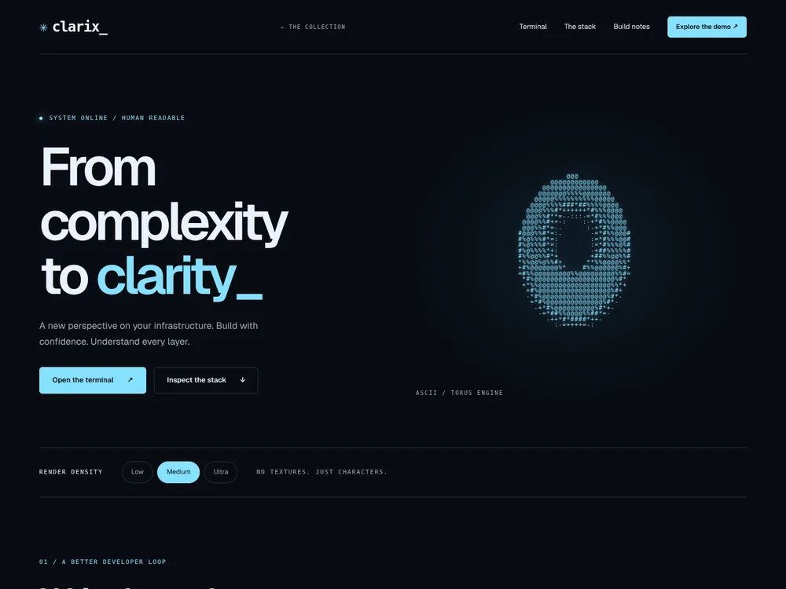
Infrastructure, made legible.
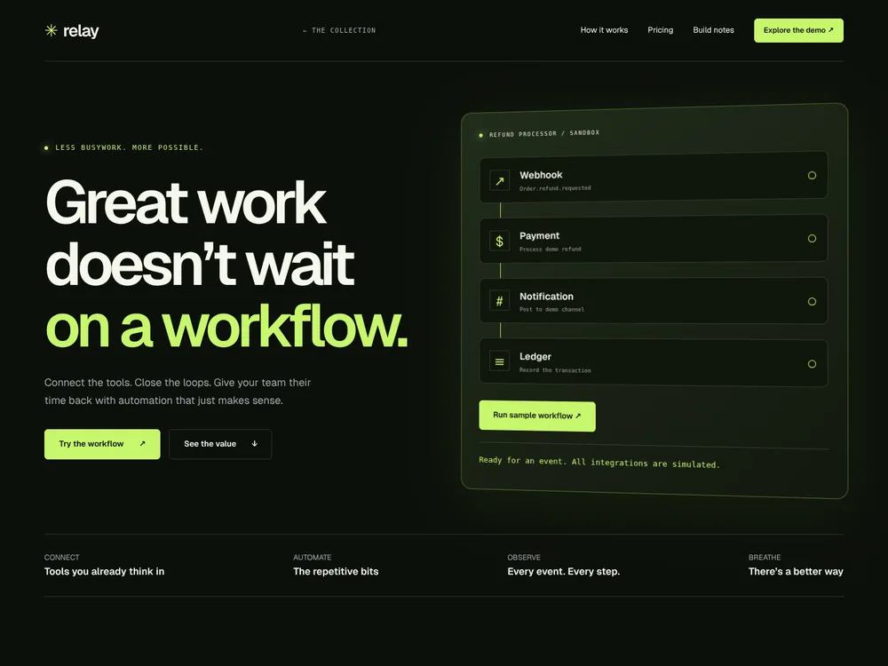
Let the good work flow.
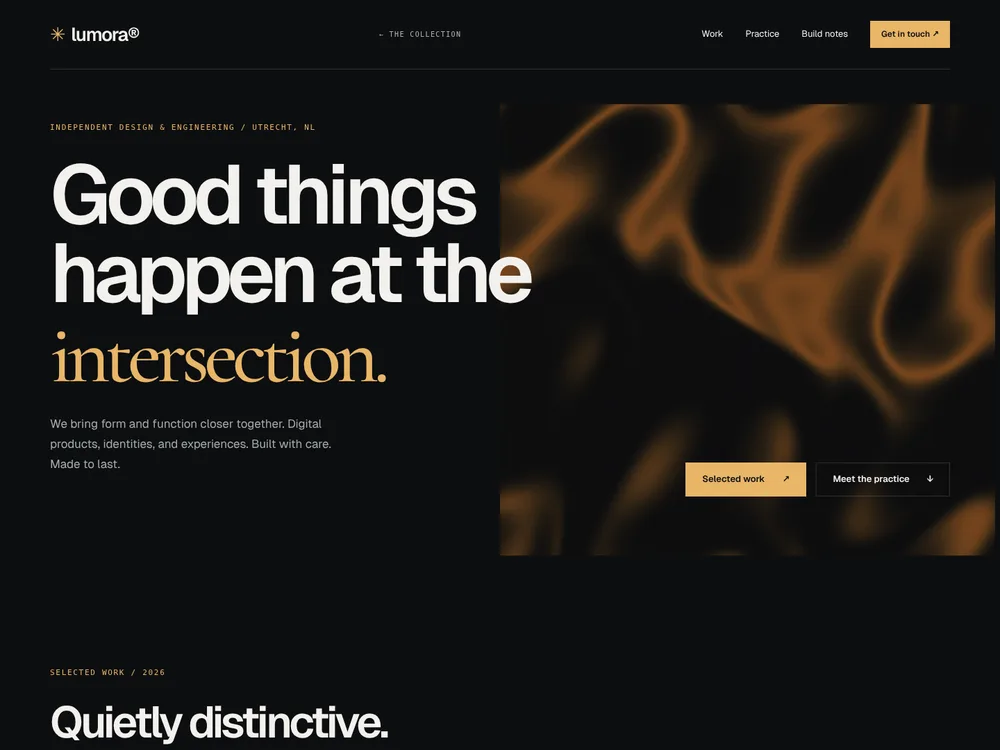
Considered design. Thoughtful engineering.
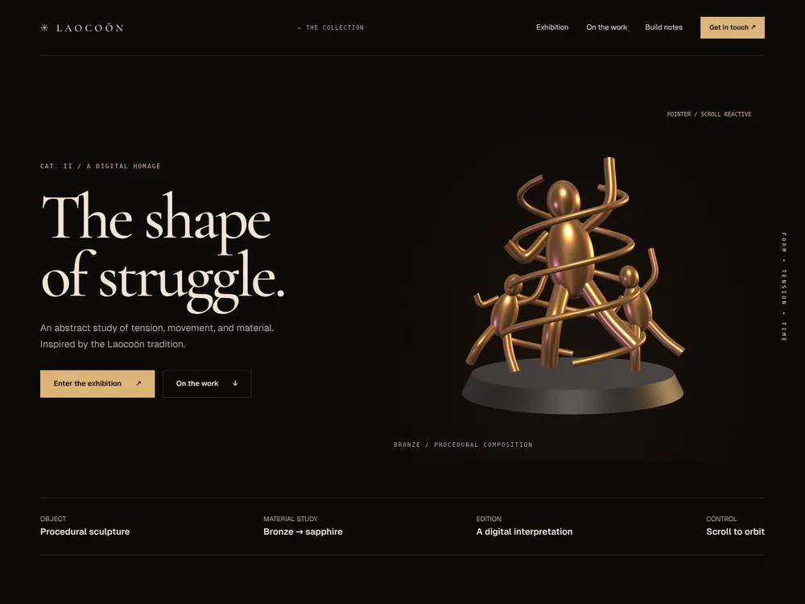
Form, tension, and the space between.
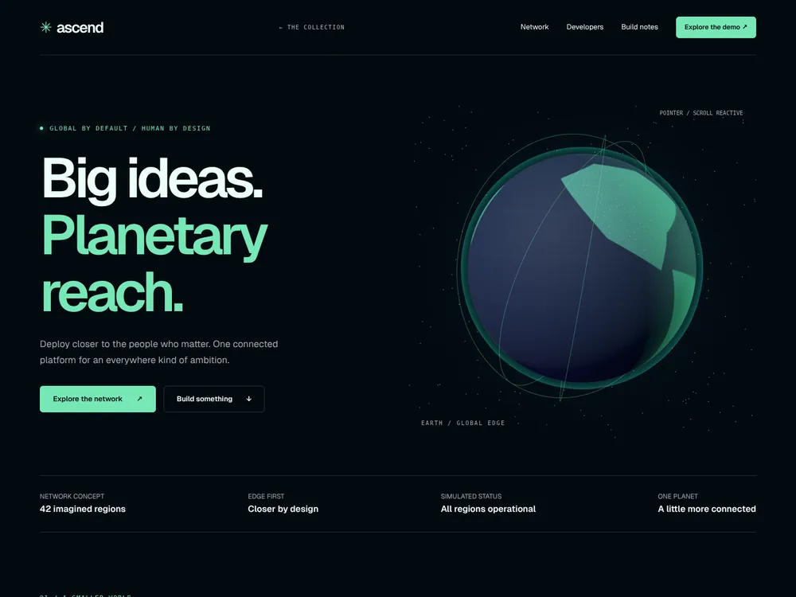
A world closer to your users.
Try another name or clear your filters.
These are independent interpretations of the featured GetLayers text briefs — not pixel-identical copies or working commercial services. Each site has its own visual direction, meaningful local interactions, and an honest record of how it was made.
Read the repository review ↗Map the prompt’s narrative, palette, motion, and interactions. Resolve contradictions before writing code.
Original procedural artwork. Local dependencies. Responsive layouts and controls you can actually try.
Individual rebuild prompts, engineering logs, test results, and explicit limitations. Nothing hidden behind the finish.